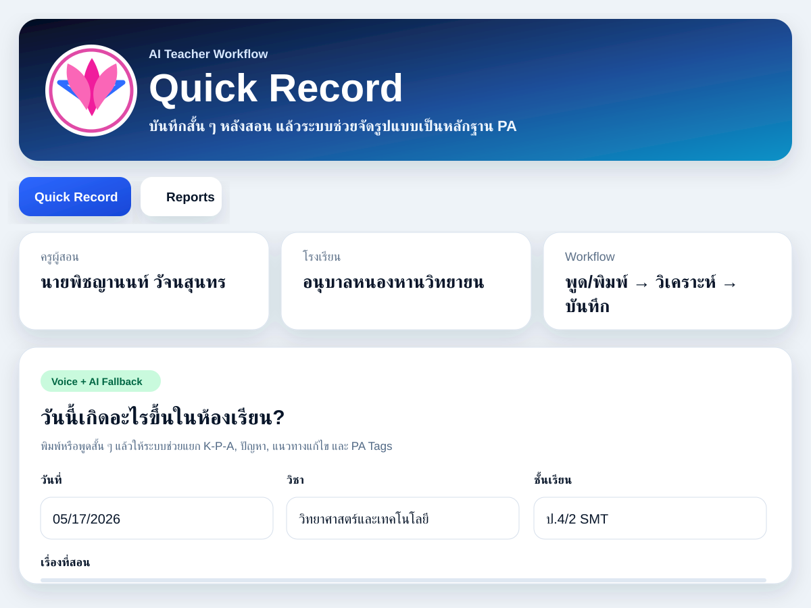

บันทึกเร็วหลังสอน
ครูพิมพ์หรือพูดสรุปเหตุการณ์ในห้องเรียนแบบสั้น ๆ โดยไม่ต้องจัดรูปแบบเอกสารตั้งแต่ต้น
ระบบบันทึกหลังสอนแบบรวดเร็วสำหรับครู ช่วยเปลี่ยนบันทึกสั้น ๆ หลังสอนให้เป็นข้อมูลที่จัดหมวดชัดเจน ทั้ง K-P-A ปัญหา แนวทางแก้ไข และแท็กหลักฐาน PA

AI Teacher Workflow
ครูพิมพ์หรือพูดสรุปเหตุการณ์ในห้องเรียนแบบสั้น ๆ โดยไม่ต้องจัดรูปแบบเอกสารตั้งแต่ต้น
ระบบช่วยจัดหมวด K-P-A ปัญหา แนวทางแก้ไข และประเด็นที่เกี่ยวข้องกับงานพัฒนาผู้เรียน
ข้อมูลที่บันทึกสามารถใช้ประกอบ SAR, PA, PLC, บันทึกหลังสอน และการสะท้อนผลการจัดการเรียนรู้
มีส่วน Reports สำหรับย้อนดูบันทึก จัดกลุ่มข้อมูล และนำไปใช้วางแผนพัฒนาการสอนรอบต่อไป
AI Lesson Reflection
เครื่องมือนี้ส่งบันทึกไปยัง serverless function เพื่อให้ Gemini ช่วยจัดระเบียบเป็นสรุป K-P-A ปัญหา แนวทางแก้ไข และ PA Tags โดยไม่เปิดเผย API key บนหน้าเว็บ
Quick Record ออกแบบจากปัญหางานเอกสารหลังสอนที่ใช้เวลามาก ระบบจึงเน้นให้ครูบันทึกข้อมูล ณ เวลาที่จำรายละเอียดได้ดีที่สุด แล้วใช้ AI ช่วยจัดระเบียบเนื้อหาให้พร้อมนำไปใช้เป็นหลักฐานเชิงวิชาชีพ